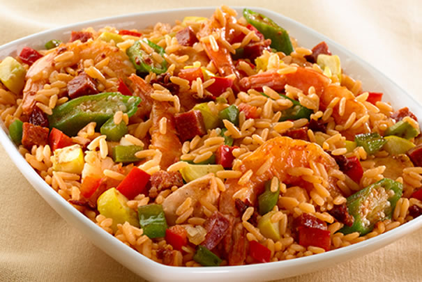

Platillos Principales
**Arroz Criollo**

Tiempo de preparación:
45 minutos
Porciones:
4
Ingredientes
Salsa de tomate
2 cucharadas de aceite (14gr)
1 cebolla
2 dientes de ajo
1 pimientón
1 taza de arroz
1 taza de maíz dulce
Preparación
Calentar en una olla el aceite, sofreir la cebolla junto con el ajo y el pimentón por 3 minutos
Adicionar el arroz y continuar sofriendo para que se dore.
Agregar el pollo, el maíz dulce y la verdura.
Mezclar todo, rectificar sal y dejar hasta que se seque.
Bajar el fuego, tapar la olla y continuar la cocción por 25 minuto más